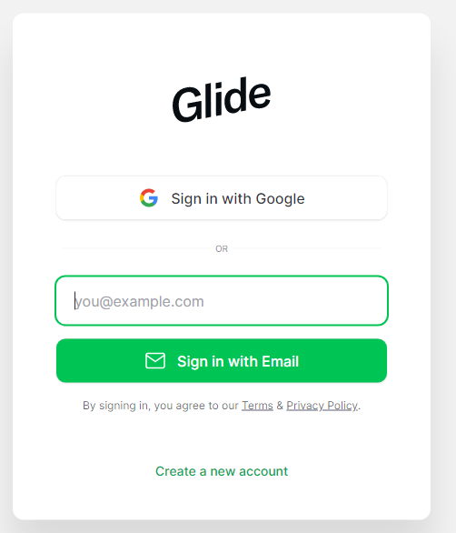
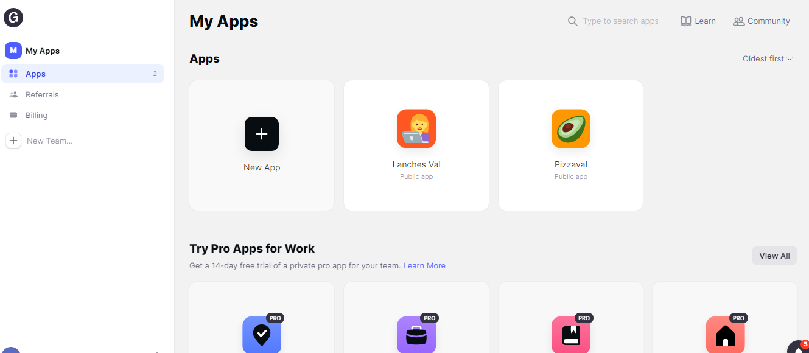

Aula 2 -
Criando a conta no Glide ou utlizando a conta do Google.
Para entrar no Glide entre no seguinte endereço:
https://www.glideapps.com/
Nele
podemos criar uma conta ou utilizar uma conta que temos no Google, para
este curso tenha uma conta do Google pois iremos utilizar recursos dele
para nossosss aplicativos.
Entre na sua conta do Google e entre no endereço que passamos acima:

Clique para entrar com a conta Google.
Ao fazer isso iremos para a tela onde podemos criar nossos aplicativos veja na imagem abaixo:

Vamos conhecer melhor o ambiente do Glide na próxima aula.
Aula 3